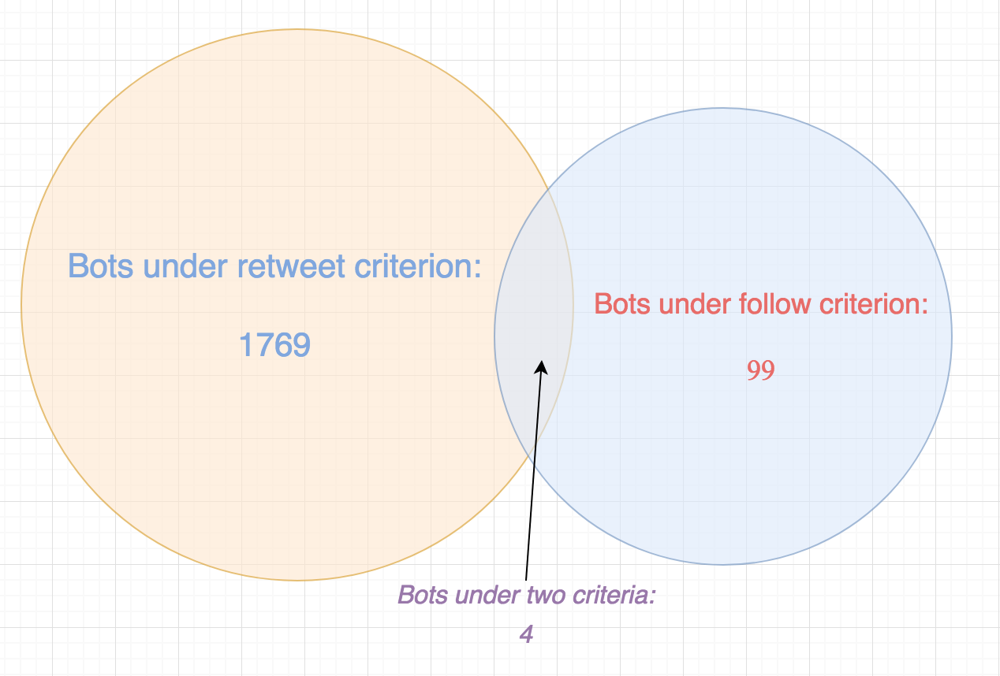

Coordinate proportion diagram
Active user proportion diagram
CR1 bot proportion diagram
CR2 bot proportion diagram
CR3 bot proportion diagram
CR1&2 bot proportion diagram
CR2&3 bot proportion diagram
CR3 bot analysis
CR2&3 bot analysis
Suspect bot proportion diagram
The set for bots under different criterion
